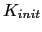

Next: Initialization Algorithm Description Up: Speaker Clusters Description and Previous: Speaker Clusters Description and Contents
In this section a new cluster initialization algorithm is presented (see Anguera, Wooters and Hernando (2006c)), which has been called ``friends-and-enemies'' initialization due to the way that single-speaker segments are grouped with those closer to them, and new clusters are created as enemies of the existing clusters. A cross-likelihood metric is used to determine ``friendliness''. This algorithm is aimed at improving the prior linear initialization algorithm, explained in section 3.1.2.
The clusters initialization block has often been considered to be of less importance in the past, as many segmentations and models retraining iterations take place later in the process that should allow any ``pseudo-optimal'' initializations to perform as well as any other in the end. In this respect it has been considered that the best initialization is that which does not introduce any computational burden to the overall system.
With a marked reduction of the error in the current system, it has been seen that the linear initialization does cause a problem on the final score, since some initial clustering errors are propagated all the way to the end of the agglomerative clustering and show up in the final result. It has also been observed that a linear initialization without any acoustic constraints on the initially created clusters introduces a random effect in the system which could be one of the sources of per-show ``flakiness'', as presented in Mirghafori and Wooters (2006).
When designing an initialization algorithm for speaker diarization there is an additional problem beyond the standard problem of acoustic clustering. It is important to constrain the classification of every acoustic frame according to its context, in the same way as it will be classified within the rest of the system, which uses a minimum duration for a speaker turn to avoid instabilities and very short segments. For this reason it is important to separate into two different initial clusters, for example, data from a speaker in a solo presentation and data from the same speaker in an overlap region, or in a region with a lot of non-detected silence segments as the models used initially are small and can cause problems when modeling different kinds of data. These clusters should be merged in the agglomerative clustering, using more complex models.
The proposed ``friends-and-enemies'' initialization algorithm aims at creating  initial clusters ensuring that each cluster contains data only from one speaker. It intends to maximize the cluster purity, as introduced in Gauvain et al. (1998), which accounts for the percentage of frames in any given cluster that come from the most represented speaker in that cluster. It differs from the DER in that it does not pretend to find the optimum number of clusters, but rather obtain each cluster with only one speaker worth of data in it.